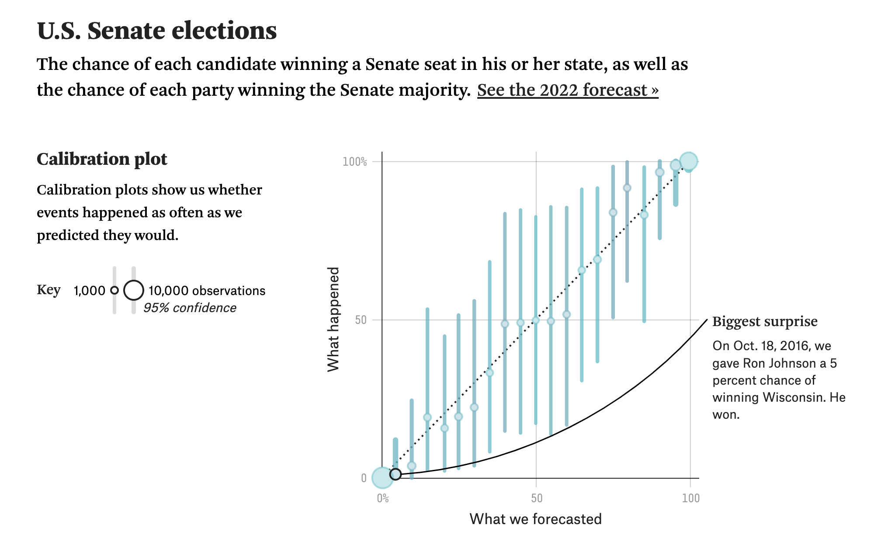

Calibration and Evaluating Classifiers
Metrics for Probability Predictions
Introduction
There’s something of a complexity trajectory in evaluating classification models that I’ve observed over the past few years. It starts with accuracy. But soon after learning about accuracy, data scientists are taught that accuracy is problematic for two reasons:
- It doesn’t work well with unbalanced classes. This is the “if 95% of people don’t have cancer and you always predict ‘no cancer’, your model isn’t actually good” argument.
- It doesn’t make any distinction between types of errors. In particular, it weighs false positives and false negatives equally, which may not be appropriate for the problem being solved.
These are both perfectly valid drawbacks of using accuracy as a metric. So then we move on. Next stop: precision and recall.
Precision and Recall
Precision and recall are the two next most common classification metrics I’ve seen. Precision is the percentage of the time that your model is correct when it labels something as true. Recall is the percentage of the actual true examples that your model labels as true. These metrics are important for different reasons.
A very precise model doesn’t make very many Type I errors. For instance, if you’re predicting whether or not someone has cancer, a very precise model is “trustworthy” in the sense that if it tells you that they do have cancer, they most likely do. You might think about precision as a metric in hiring: You probably want your hiring process to be very good at evaluating good candidates. A high-precision hiring process would mean that when you think you’ve found a person who would be a great fit on your team, you’re very likely correct.
Recall is a bit different: It’s the percentage of the true labels that your model finds. A high-recall model suffers few false negatives: When something actually belongs to the true class, your model very often predicts it as such. You might think about this in the context of our cancer example from before. A higher recall model would mean that your model catches more of the cancer cases.
Depending on your use case, you might optimize for one of these or the other. Or you could use a blend of the two, the most common of which is the F1 score, which is the harmonic mean of precision and recall. The idea of the F1 score is to optimize for a balance of both precision and recall, as opposed to optimizing for one at the cost of the other.
Predicting Probabilities
You might be reading this thinking about how this is all about predicting classes, but very often we care about predicting probabilities. For instance, at CollegeVine we make predictions about each student’s chances of getting into their favorite colleges and universities. It’s not useful for students if we predict an acceptance or a rejection. After all, they want to know their chance, and to make a class prediction would mean that we determine a cutoff point at which we decide that if someone’s chance is above that threshold, they’ll get in. And if not, they won’t.
The problem is that there is no such threshold. More likely, college admissions is a bit of a game of chance: If five students each have a 20% chance of getting in to Carleton, for instance, I’d expect that about one of the five would get in on average. But it’d be disingenuous to make a class prediction, and I’m not sure how we’d even do that. For the five previously mentioned students, we’d expect one to get in. But if we were predicting classes we’d either predict all five to be accepted or all five to be rejected depending on where we set our threshold, and neither of those is the most likely scenario.
With all of that in mind, what metrics do we use instead? There are three metrics that we look at when we’re evaluating our models: The Brier Skill Score, AUC, and calibration. I’ve already written about AUC, and for the purposes of this post, I’m going to focus on the one I view as the most important: Calibration.
Calibration
The most important metric we track is calibration, which we’ll often evaluate by looking at a calibration plot. Below is an example of such a plot from FiveThirtyEight

The idea behind calibration is to answer the basic question “When my model said that someone had a 31% chance of winning an election, did they actually win about 31% of the time?” As you get more data, you can group your predictions into buckets to answer this question. For instance, if we’re predicting college chances we might take all the times that we said someone had between a 30 and 35% chance of getting accepted, and we’d calculate the actual proportion of the time that they were accepted. If it’s about 32.5% (close to the mean prediction in our bucket), we’d say that our model is making well-calibrated predictions in that bucket. If our model makes well-calibrated predictions of admissions chances across all buckets, it’s fair to say that it’s well-calibrated in general.
Calibration is important because it directly affects how we interpret our model’s predictions. If we’re making probability predictions and they’re not well-calibrated, then when we say something has a 25% chance of happening, or a 50% chance of happening, or a 90% chance of happening, those numbers aren’t actually meaningful. It might be the case that the 50% probablity event happens more than the 25% one and less that the 90% one, but that isn’t even a guarantee. It also is probably not the case with a badly-calibrated model that the 50% predicted probability event happens twice as often as the 25% one.
For instance, let’s imagine we’re working on a classic machine learning example (and real-world) problem: Email spam detection. Ultimately, we need to predict a class: Given an email, we need our model to tell us if it’s spam or not. But for a large proportion of classifiers, this requires setting a probability threshold. For instance, if our model says there’s a greater than 50% chance that some email is spam, we mark it as spam. If false positives (a real email being marked as spam) are more problematic than false negatives (a spam email being marked as not spam), then we might increase our probability threshold to 80%, for example, which would make it “harder” for an email to be marked as spam. But with the higher threshold, the emails that we do mark as spam we’re more confident about. Often times, we’ll use domain knowledge to determine this threshold. I’ve had many conversations where we set arbitrary thresholds based on our experience or our gut instincts about how the system we’re working in should work. Often, those conversations end with something like “80% feels about right” and we go with that.
Hopefully you’re starting to see the issue here: If our model’s predictions are poorly calibrated, then it’s not possible to make a decision like that. We can’t lean into our domain knowledge about any particular number being a threshold that makes sense, because the probabilities we’re predicting don’t actually mean anything in practice. In other words, the fact that we don’t know if when we say 80%, it’s actually 95% or 35% or some other number makes it impossible to make decisions based on our predictions. In short, if our predictions aren’t well-calibrated, it’s not possible to reason about them in any meaningful way. They can also very easily be misleading.
As I’ve mentioned before, this is especially important is the probabilities themselves are the prediction. If you’re telling a student that their chances of getting into Carleton are 27%, it goes without saying that when you say they have a 27% chance, that if they were to apply four times they’d get in about once on average. If they get in about one in eight times instead, the miscalibrated prediction could have a meaningful, negative effect on their college outcomes. For instance, if you severely overpredict a student’s chances and they end up applying to fewer schools as a result, there’s an increased likelihood of them getting in nowhere, which would be a particularly bad outcome. In this case, better-calibrated predictions lead directly to better decision-making.
In statistics world, it might be helpful to think of poor calibration as a bias issue: You might think of better-calibrated predictions as being less biased, in the sense that the expected value of the outcome (the actual long-run frequency of a student being accepted) is closer to what your prediction was.
Wrapping Up
Hopefully I’ve convinced you that the calibration of your classifier’s predictions is important and practically meaningful. If a model’s predictions are poorly calibrated, it’s difficult (or impossible) to reason about them in a practical sense. Miscalibrated predictions can also be misleading, because we often naturally interpret probabilities as long-run frequencies. For instance “If I flip this coin 100 times, it’ll come up heads about half of the time.” You might think about working with poorly calibrated predictions being similar to flipping a biased coin when you’re unaware of its biases.
In the next post, I’ll talk about class imbalances and why balancing your classes can be a particularly bad idea.